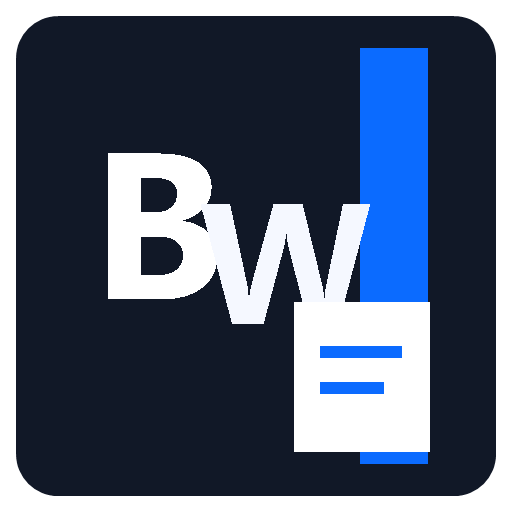

Windows · PDF/OCR · Lifetime-Lizenz
Bytewerk PDF Text Pro
59,00 EUR
5 Gratis-PDFs pro Tag
Bytewerk PDF Text Pro ist eine Premium-Windows-App zum Umwandeln von PDFs in sauberen, lesbaren Text. Die App erkennt normalen PDF-Text, nutzt OCR fuer gescannte Seiten und exportiert das Ergebnis lokal als TXT-Datei.
PDFs per Drag & Drop oder Dateiauswahl in Text umwandeln
Eingebetteten Text aus normalen PDF-Dokumenten extrahieren
OCR-Fallback fuer gescannte oder bildbasierte PDF-Seiten
Deutsch und Englisch als OCR-Sprachen vorbereitet
5 erfolgreiche PDF-Konvertierungen pro Tag kostenlos
Unbegrenzte Nutzung mit Offline-Lifetime-Lizenz
PlattformWindows
KategoriePDF · OCR · Text-Export · Produktivitaet
Preis59,00 EUR
Kostenlos5 PDF-Konvertierungen pro lokalem Kalendertag
LizenzOffline-Lifetime-Lizenz fuer unbegrenzte Konvertierungen
DownloadNach Kauf: Bytewerk-PDF-Text-Pro-Setup-1.1.2.exe
Version1.1.2
TechnikWindows Desktop, .NET, OCR, Inno Setup
QuellprojektGitHub Repository